Paso 1: Descargar e Instalar la App
Descarga el archivo .apk y ábrelo para comenzar la instalación.
Descarga el archivo .apk y ábrelo para comenzar la instalación.
Presiona “Instalar” cuando el sistema lo solicite.
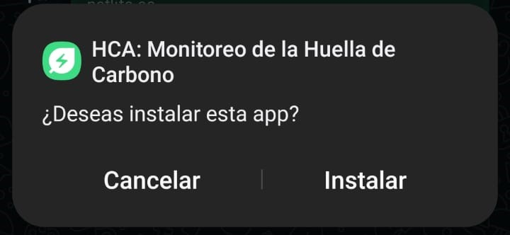Espera unos segundos mientras se instala la aplicación.
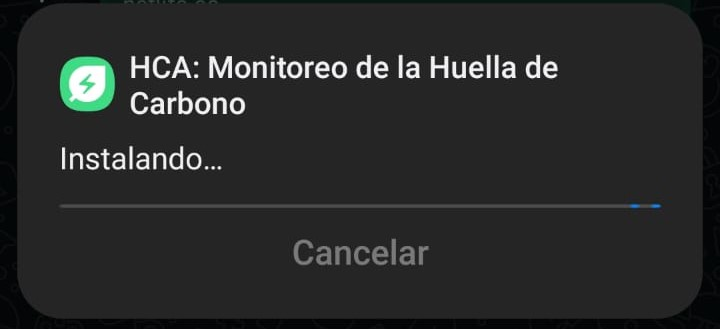Concede los permisos necesarios para el funcionamiento correcto de la app.
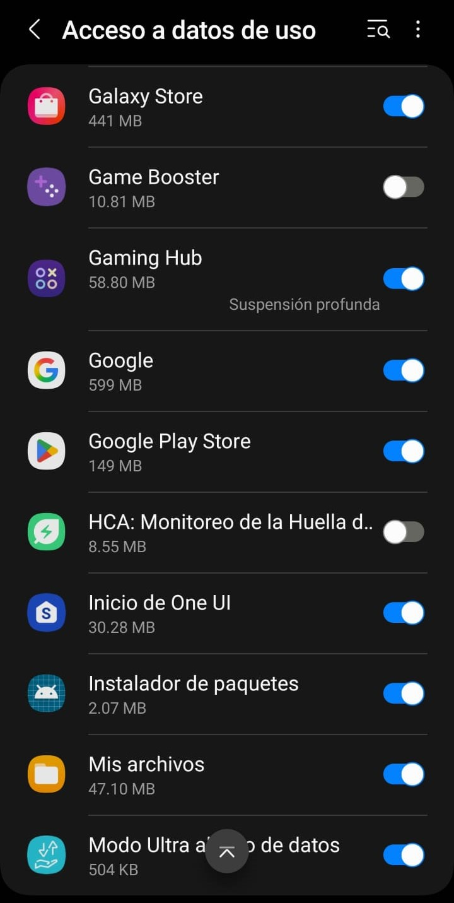Lee y acepta los términos y condiciones para usar la aplicación.
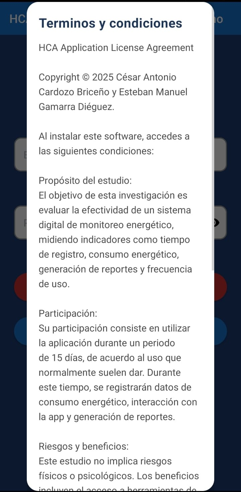Ingresa tu correo electrónico y contraseña, luego toca “Iniciar”.
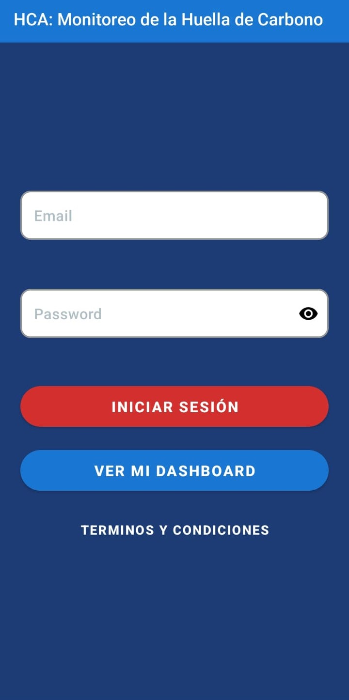Al abrir la aplicación después de iniciar sesión, verás una tabla con los registros disponibles. Desde ahí podrás consultar la información correspondiente a tu actividad.
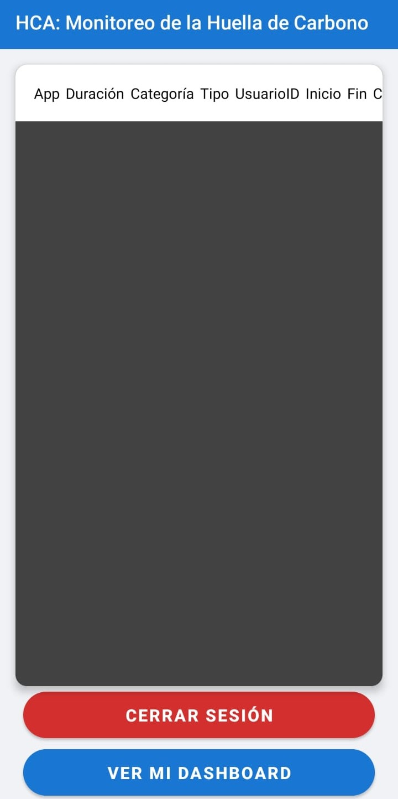Selecciona la opción para ir a la configuración de accesibilidad del dispositivo.
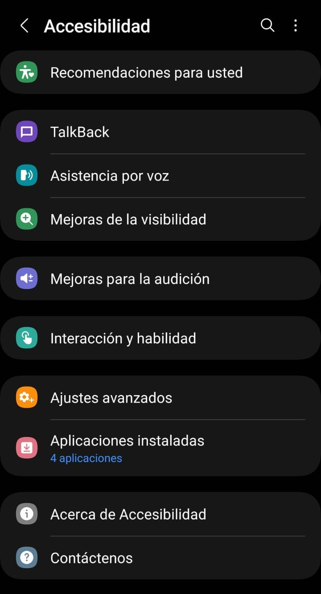Dentro de los ajustes, busca la sección “Accesibilidad”.
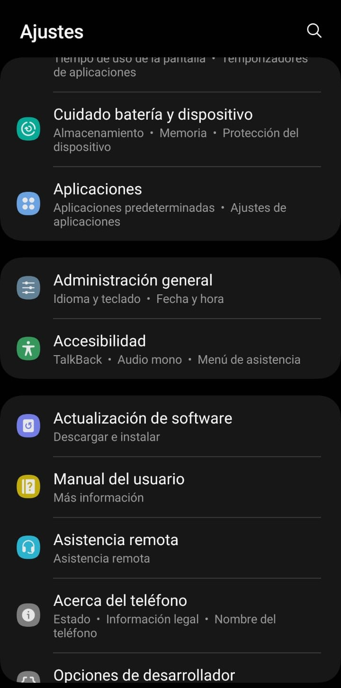Ubica la app en la lista de servicios de accesibilidad.
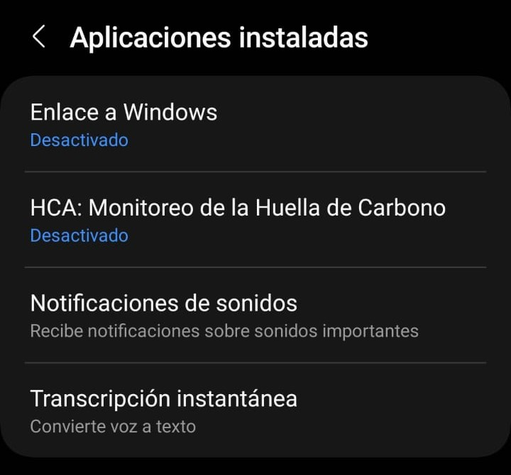Activa el acceso de la app dentro de la configuración de accesibilidad.
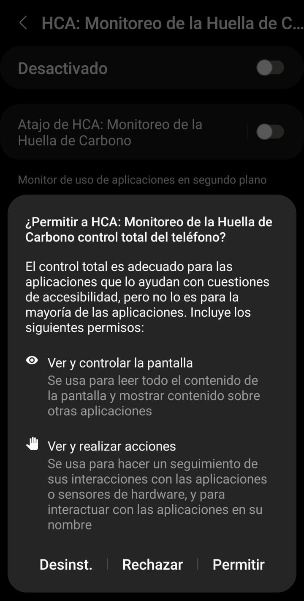Una vez configurada la app, podrás ver tus registros directamente desde la aplicación mientras usas tu celular.
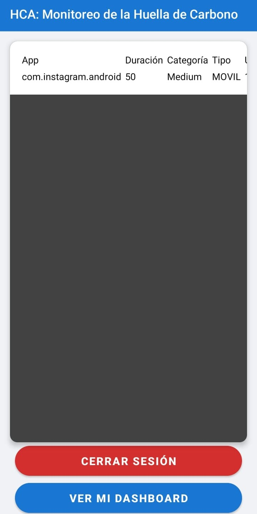